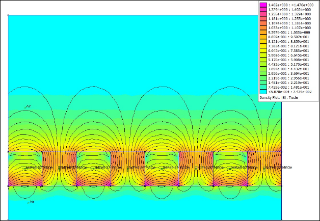
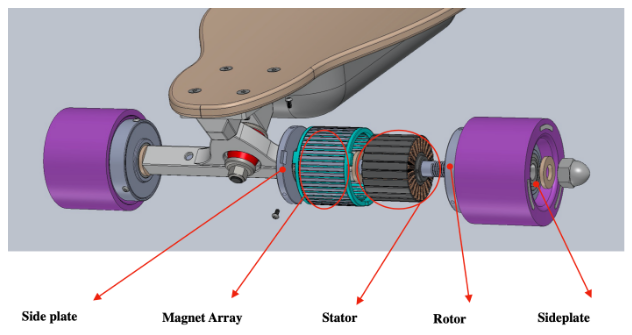
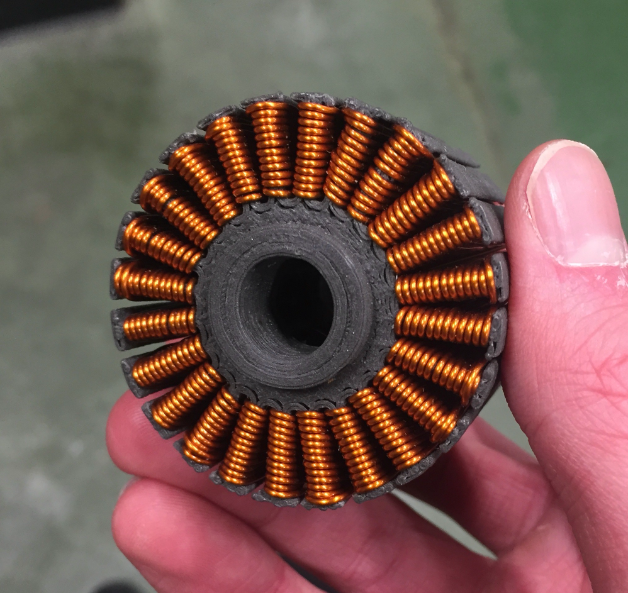
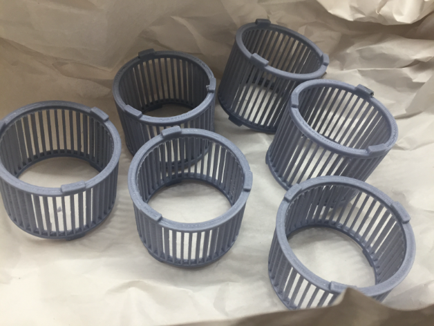
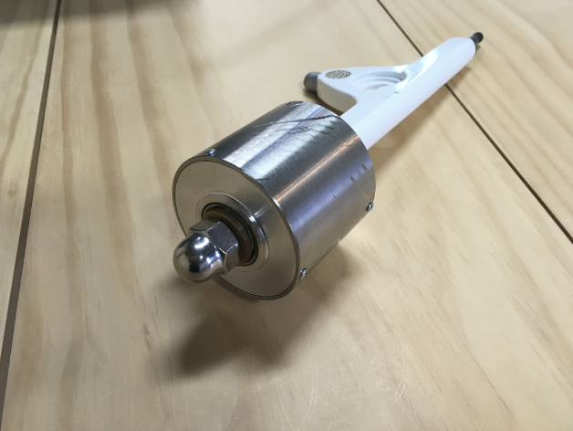
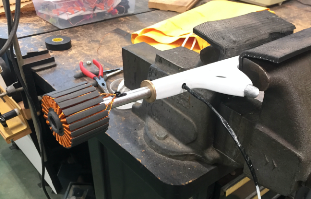
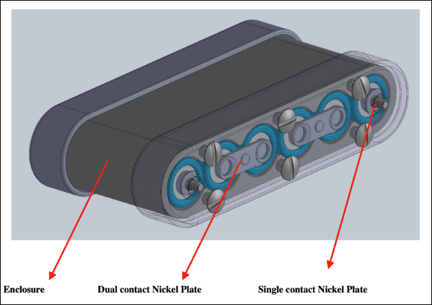

M.E. & E.E.
Halbach Hub Motor
By Andrew Gundersen, Enrique Hernandez and Ryne Quinlan
Abstract
A three-phase brushless DC hub motor featuring a Halbach magnet array is proposed as a way to retain all the benefits of a hub motor design while improving on its torque output. This motor was designed from the start to be used in an electric-powered longboard. This project presents a build guide detailing the design and manufacturing processes of the hub motor and its power supply. The result is a proof of concept hub motor that demonstrate the potential of Halbach technology single person electric vehicles. The motor can achieve up to twice the torque as other hub motors in its class. Finally, this project serves as a useful experimental platform for learning about and improving upon the core technologies behind electric vehicles.
Motivation
A popular debate among electric longboard enthusiasts regards the use of direct drive versus belt drive. Direct drive refers to the utilization of a hub motor - a motor inside of the wheel - to deliver a 1:1 drive ratio for propelling the longboard. On the other hand, a belt drive system consists of the wheel and motor being separated with a belt in-between. This belt is typically installed for a high gear ratio (ie. 3:1), meaning that belt drives inherently have higher torque. However, belt systems come with their fair share of drawbacks. They have a high number of moving parts, making them more susceptible to damage and ware. Also, they have lower efficiency because of the added friction the belt and gears add to the system. These drawbacks are the reason hub motors are becoming more popular. They are efficient and reliable. The motivation behind this project is attempting to build a hub motor that retains all the positive qualities of direct drive systems, while improving on their torque.
The Halbach Array

Discovered by John C. Mallinson in 1973, the effect of “one-sided-flux” quickly became popular in the physics community as a way to improve the performance of particle accelerators. The first person to do this was Klaus Halbach, which is why the powerful magnet array is named after him. The principle behind the Halbach array is quite simple and yet profound. A traditional magnet array for a motor is alternating north and south poles, meaning that they are offset by 180 degrees. This configuration will yield equal magnetic fields on both sides of the array. However, magnets in a Halbach array are offset by 90 degrees. This design yields a unidirectional magnetic field, effetely doubling the field in one direction. A motor’s torque is derived from the force between the stator and the rotor’s magnetic fields. Doubling this force without needing bigger magnets can down profound impacts on motor performance.
Design
Design Philosophy
Designing a motor with size constraints is a balancing act. The motor as a whole incorporates several characteristics that when adjusted affect the performance drastically. Envision trying to tweak the values of a multivariable equation in such a way that maximizes the output. However, it does not stop there because real-life mechanical limits must be accounted for as well. For instance, theory would suggest to minimize the distance between the stator and the rotor. However, actually building a device with a 0.1mm clearance between these two piece is nearly impossible. Therefore, motor design is a multi-faceted effort because it requires knowledge of electromagnetic theory as well as keen sense of mechanical engineering.
General Specifications
Phase number: 3
Winding config: wye
Teeth: 22
Poles: 24
Windings per tooth: 14
Stator width: 35mm
Stator diameter: 50mm
Rotor inner diameter: 52mm
Rotor
outer diameter (not including wheel): 64mm
Components

Broadly speaking, motors consist of a stator and a rotor. The stator is stationary and the rotor rotates relative to the stator. Please hold-on to your relativity comments. Since this motor is a brushless DC design, the rotor is the outside part of the motor (the wheel), while the inside remains stationary and fixed to the axel of the longboard. Most motor designs are the opposite. This motor can be further broken down into six major components, which are the stator, the axel, left and right side plates, the magnet array, and the rotor shell. Each one was custom designed and manufactured for this project.
Fabrication
Stator

The stator is a custom piece that was 3D printed using an iron-doped plastic filament in order to give it better electromechanical properties. The biggest difficulty was getting the printer to replicate our design. Since tolerances are very tight inside of the motor, many iterations of the stator design were required to achieve a shape that was feasible for the printer to print. As a result of 3D printing the stator, a more optimized shape was achieved as well as making the whole motor much lighter. Typically, stators are made from steel. However, we did not have the resources to pursue that route.
Winding the stator took a lot of time and focus. Since the stator had 22 teeth and a planned 14 windings per tooth with a 14 wire gauge, most of the labor was spent on designing and building a motor winding workbench. The stator would be clamped down and a team of two people would follow a specific procedure to wind a given tooth. Any mistake with regard to the winding patten would be fatal. The winding itself took a full day.
Magnet Array

The magnet array presented its own set of engineering challenges. However, through thoughtful design and effort, a capable prototype was achieved. The biggest difficulty was designing an enclosure for the magnets that would be thin enough to fit inside the space-constrained housing, and strong enough to hold the powerful neodymium magnets in place. The forces coming from the Halbach array are effectively twice as power as a traditional array. Once again, we turned to 3D printing to get the job done, mainly because of time and resource constraints. However, this time, we contracted with a professional 3D printing company who has access to more precise printers with stronger filament. The magnet array housing was printed using ABS plastic and a high-precision FDM printer.
Each rotor pole consists of three magnets, with the two magnets on sides being shared by the neighboring poles. In accordance with the Halbach array, the magnets were place 90 degrees offset from each other around the whole rotor.
Rotor Housing

Hub motors must be designed and build with strength in mind. The rotor housing had to be strong enough to not only take the weight of the rider, but also the impulse forces incurred from bumps in the road (which tend to be a much greater force). The rotor must incur these forces while maintaining the very small tolerance between it and the stator while spinning at a high rpm. Therefore, the rotor shell was made from 304 stainless steel hollow pipe, while the side plates were made from 6064 aluminum. All the metal parts were custom designed and machined in-house. The pipe was first cut to desired length. Then, it was put on a lathe machine in order to achieve the desired dimensions. After the rotor was properly dimensioned, an XY drill press was used to drill and tap the holes that would allow for the motor to be held in place. The whole contraption came together with six screws (three on each side) placed 120 degrees apart. The rotor shell was only 2mm thick and the side plates were 6mm thick.
Axel

Axels on hub motors are stationary and carry the wires from the motor to the battery safely. Therefore, we retrofitted an existing longboard truck with a new axel that was hollow on the inside with holes for wires. The existing axel was completely chopped of. Then, a hole was drilled down the truck to fit the larger axel. The new axel was installed by hammering it into place inside of the truck. The tolerances were set in a way that allowed the axel to stay in place through fiction alone. Finally, the axel was given grooves on the end to accept a hubcap that keeps the motor in place on the axel.
Power Supply

The DC power supply was designed before the motor itself because the limiting factor on electric vehicles is typically the battery pack. Therefore, we set out to decide the specifications of the battery pack and then designed a motor to accommodate those specifications. The pack is a 12S 3.7V lithium ion battery pack wired in series to provide a total voltage of 44.4V. Each cell has a nominal voltage of 3.7V and with a capacity of 3200mAh. The cells chosen have a good balance of capacity and voltage. Finally, a battery management system ensures that each cell in the pack is equally discharged.
Conclusion
This project demonstrates a working proof of concept compact halbach hub motor. An implementation of this technology would allow for more efficient and aesthetic portable electric vehicles with higher torque output. Having access to more specialized materials would improve the design of this hub motor even further. In a production version, it is recommended to pursue internal metal components so that the overall design is more robust to heat and ware, something we had issues with when operating the motor for longer periods of time. The halbach array is a very promising technology for small electric vehicles because it basically guarantees a 75% increase in performance when accounting for losses in the system.